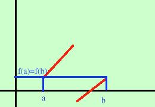
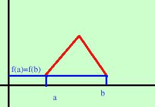
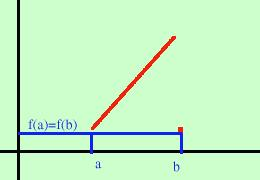
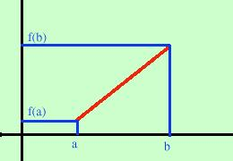

 Caso della funzione non continua Sono verificate tutte le ipotesi eccetto la prima (le due parti di curva devono avere la stessa inclinazione nel punto di discontinuita') Ho utilizzato una discontinuita' di prima specie  Caso della funzione non derivabile all'interno dell'intervallo: questa non e' derivabile dove c'e' la punta Fai attenzione che se la funzione e' derivabile all'interno e non e' derivabile sul bordo dell'intervallo il teorema vale lo stesso: sapresti fare un esempio? se la funzione fosse continua in un intervallo che  non fosse chiuso potrei pensare una discontinuita' di terza specie ad un estremo ed il teorema non sarebbe piu' valido (ho esagerato il punto sul bordo destro per renderlo piu' visibile e mostrare la discontinuita') Il quarto esempio  e' il piu' semplice : se i valori non fossero uguali una semplice retta mi mostrerebbe che il teorema non e' piu' valido |